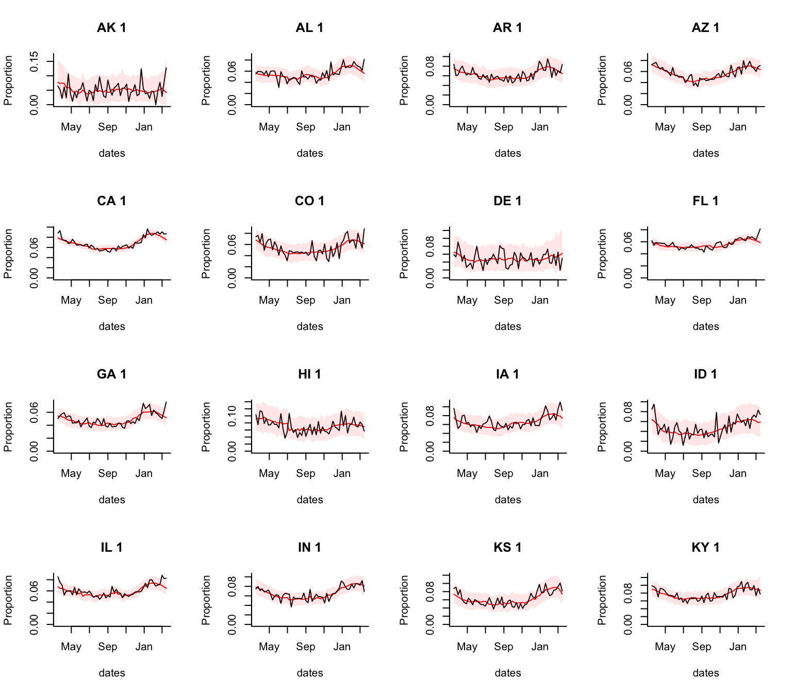
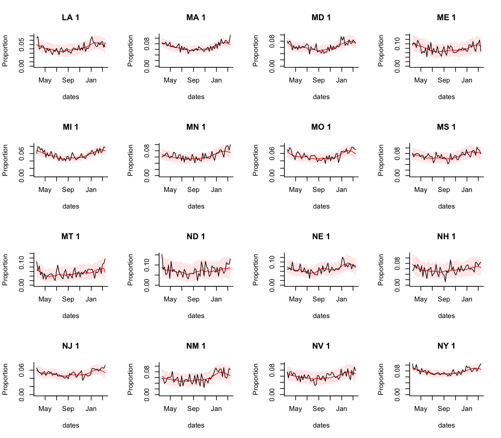
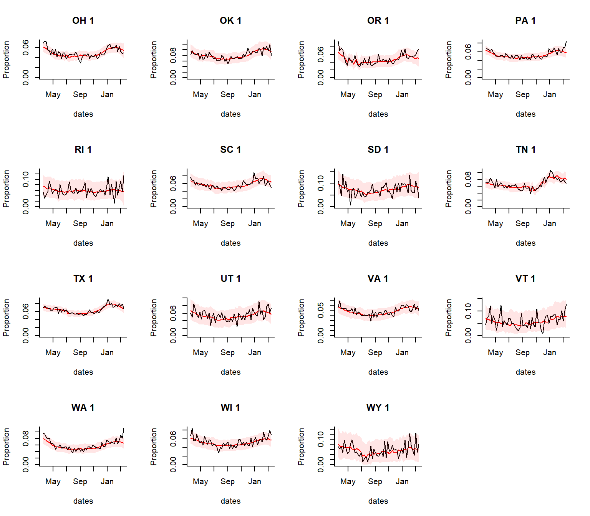
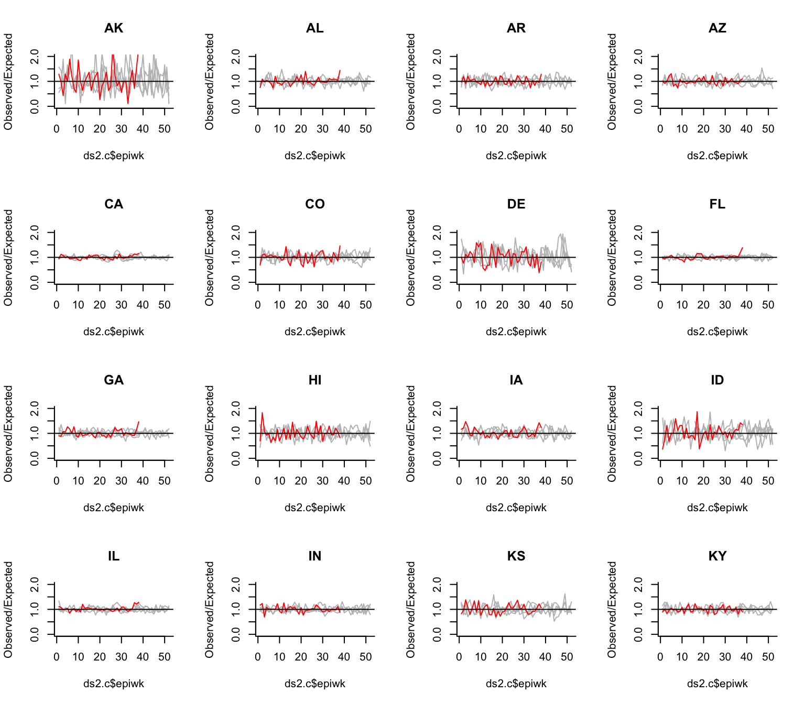
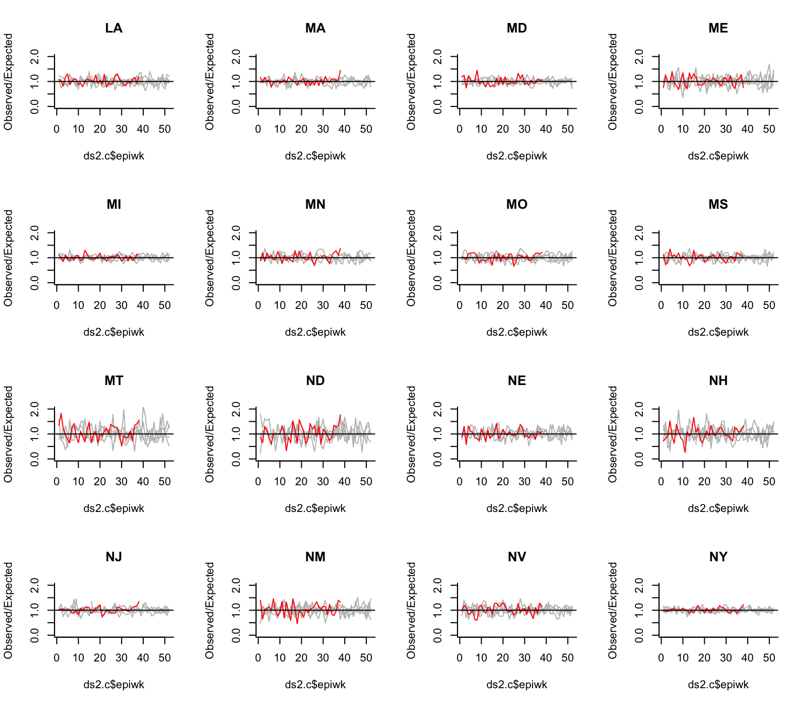
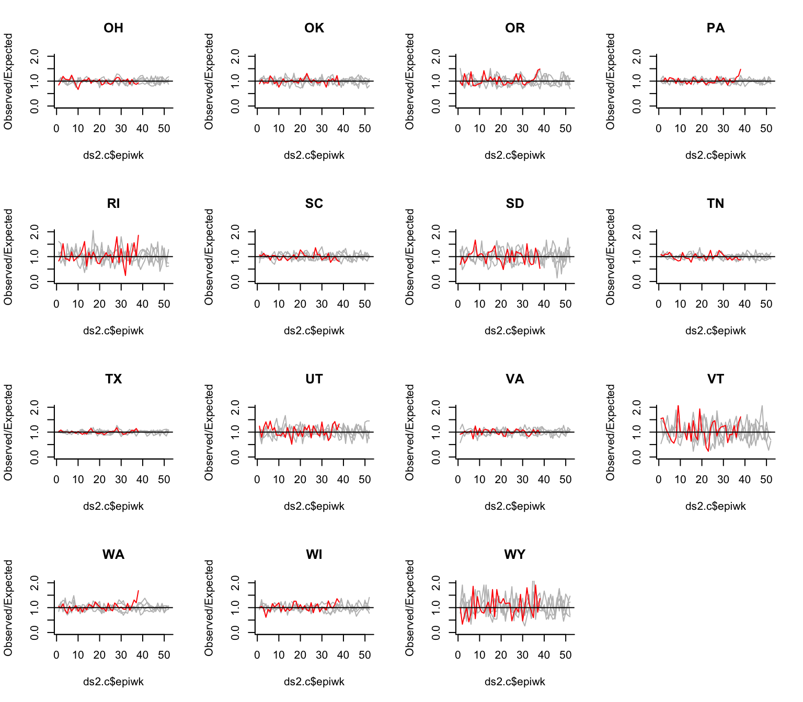
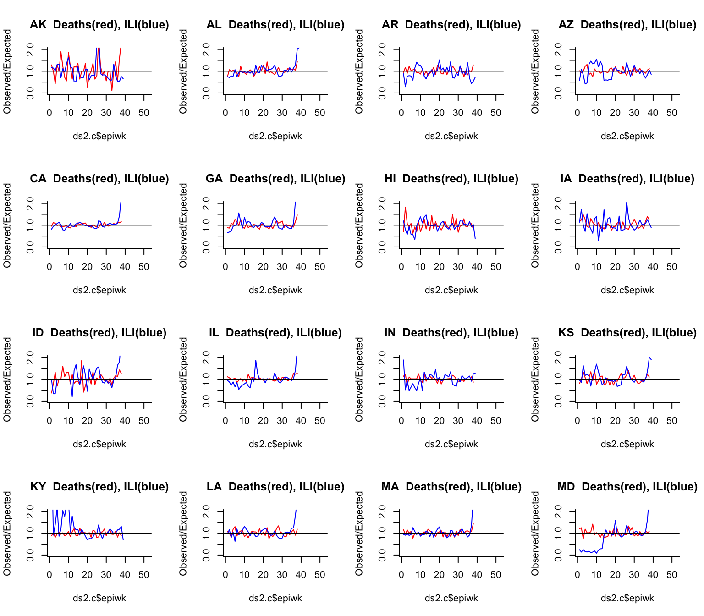
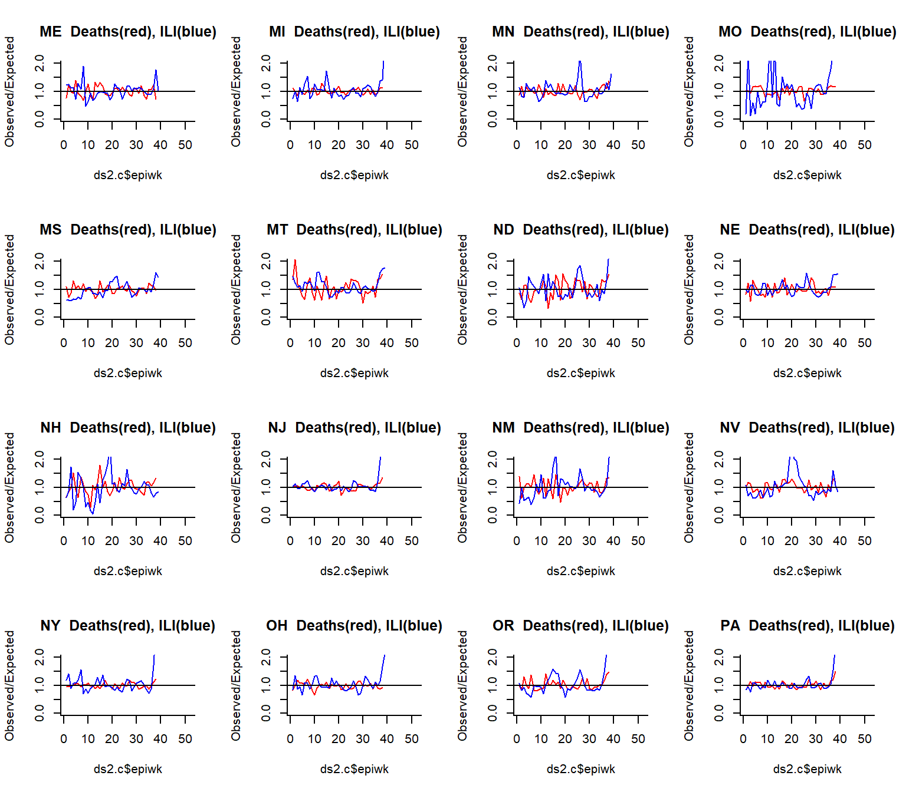
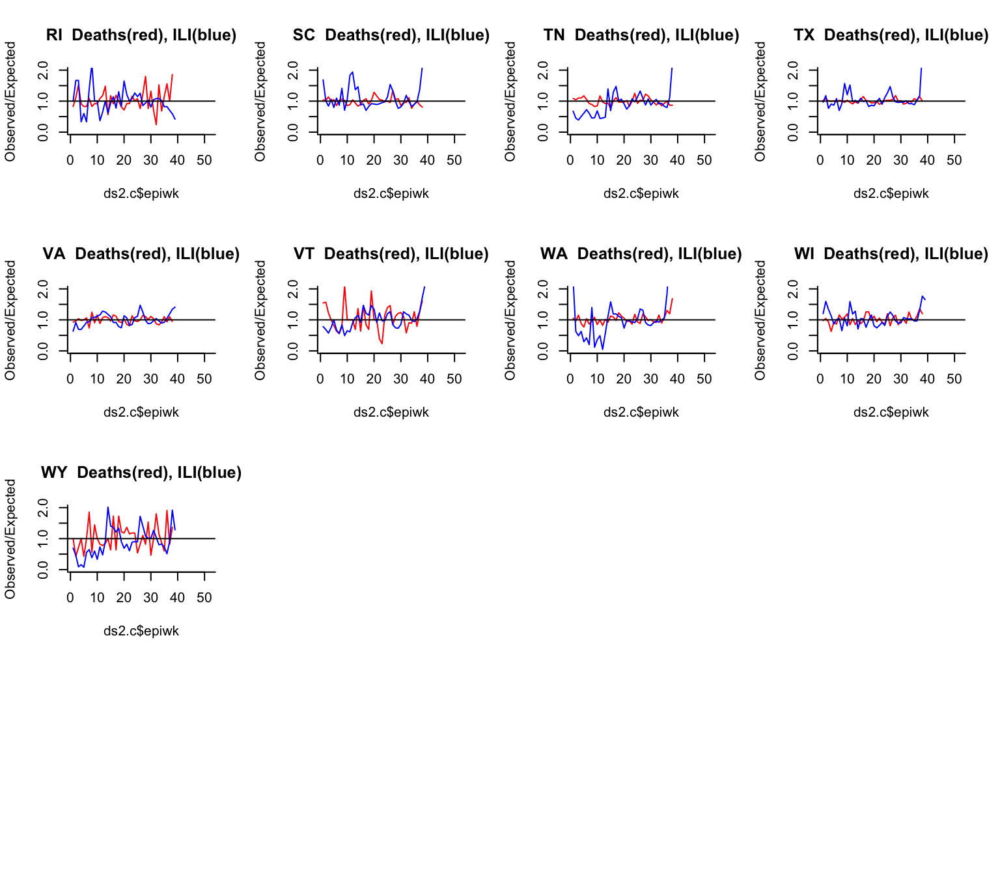

PImortality.RmdIn this example, we will analyze increases of pneumonia and influenza (P&I) above the seasonal baseline, adjusting for year-to-year variations in incidence. We use the weekly data published by the CDC We fit a simple seasonal baseline using harmonics, and adjust for year-to-year variations. Influenza activity is adjusted for as well using data from NREVSS (percent of tests positive for influenza in the previous week). The model is fit through end-of-February 2020 and then extrapolated forward based on the time of year.
The black line shows the observed proportion of deaths that were due to Pneumonia & Influenza (P&I) per week. The red line and shaded area represent the 95% Prediction Interval. The latest data is for the week ending 2020-03-22.

These plots show the Observed/Expected number of deaths due to pneumonia and influenza in each week for the 2019-20 year (red) compared to previous years (gray). Values close to 1 indicate that the values for that week are close to what would be expected based on the time of year and influenza activity.

Here we compare the observed vs expected number of deaths due to pneumonia and influenza in each week compare to the observed vs expected number of outpatient visits for influenza-like illness (ILI) in each week. we would expect ILI (blue line) to increase earlier than deaths (red line)
